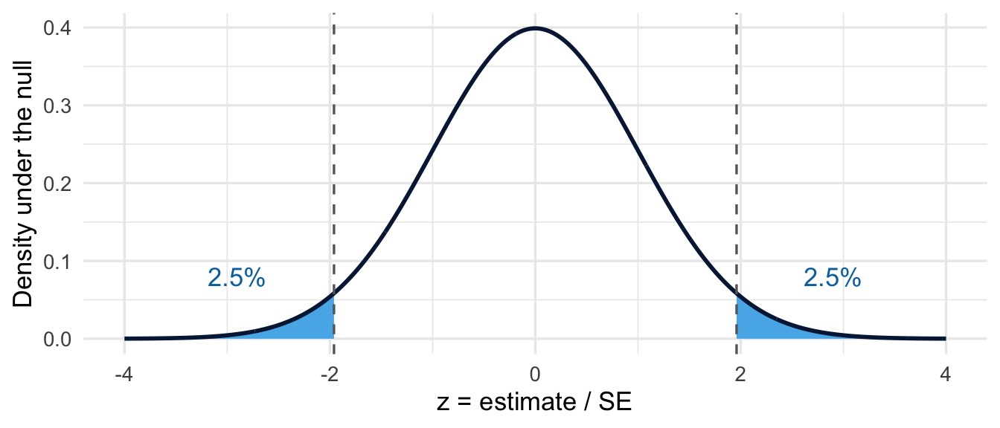
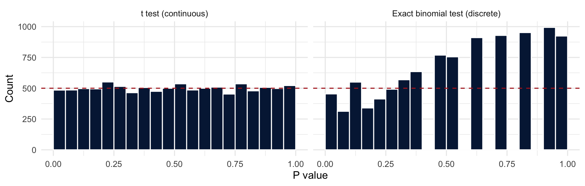
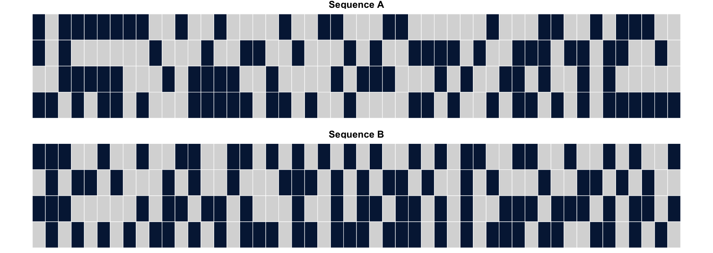

state what a P value is, and recognise the common misinterpretations;
explain, with a simulation, why P values from identical studies vary so much, and why they are uniformly distributed when the null hypothesis is true;
convert a P value into an S value (bits of surprise) and read a whole compatibility curve rather than one test;
explain why “no significant difference” is not evidence of no difference;
recognise how poor human intuition about randomness is;
explain why the decision to stratify, as in Simpson’s paradox, is a causal question that the data alone cannot answer.
R packages:dplyr, tidyr, purrr, ggplot2, knitr.
The last two chapters kept running into P values. The heparin meta-analysis of Section 9.5 turned on an interval that just included 1; the fragility index of Section 10.5 re-expressed a P value near 0.05 as a handful of patients; vote counting (Section 9.1.1) failed because it treated P > 0.05 as “no effect”. This chapter steps back to the P value itself: what it measures, how noisy it is, and what to report instead. The arguments are not new (1,2), but they are still widely ignored, and simulation makes them hard to dismiss.
11.1 What a P value is
A P value is the probability, computed under the null hypothesis and under all the other assumptions of the statistical model, that a test statistic would be at least as extreme as the one observed. For an estimate with a normal sampling distribution, the statistic is \(z = \text{estimate}/SE\) and the two-sided P value is \(2\{1 - \Phi(|z|)\}\), the shaded tails of Figure 11.1.
Code
tibble::tibble(z =seq(-4, 4, by =0.01), d =dnorm(z)) |>ggplot(aes(z, d)) +geom_area(data = \(x) filter(x, z <=-1.96), fill ="#56B4E9") +geom_area(data = \(x) filter(x, z >=1.96), fill ="#56B4E9") +geom_line(linewidth =1, colour ="#041E42") +geom_vline(xintercept =c(-1.96, 1.96), linetype ="dashed", colour ="grey40") +annotate("text", x =c(-2.9, 2.9), y =0.08, label ="2.5%", colour ="#0072B2") +labs(x ="z = estimate / SE", y ="Density under the null")

Figure 11.1: The standard normal distribution of z under the null hypothesis. The shaded tails beyond ±1.96 hold 5% of the probability.
Three points in the definition are routinely forgotten. The P value is computed assuming the null is true, so it cannot be the probability that the null is true. It depends on the whole model (no bias, correct distribution, no selective reporting), so a small P value may indicate a problem with any of these rather than a real effect. And it says nothing about the size of an effect: a trivial effect estimated precisely and a large effect estimated imprecisely can have the same P value (Section 13.1 returns to this). (1) list 25 common misinterpretations; most come from forgetting one of these three points.
11.2 How noisy is a P value?
Consider an experiment whose true effect is two standard errors from zero, so that \(z \sim N(2, 1)\). If the same experiment were repeated ten times, what would be the range of the ten P values?
0.02 to 0.05
0.002 to 0.05
0.0002 to 0.05
0.0002 to 0.5
When I asked this question of 17 clinicians, 4 chose the right answer; among 706 epidemiology graduate students, 153 did. The most popular answers were the narrow ranges, 1 and 2. One line of R gives the answer.
Code
set.seed(123)p_ten <-2* (1-pnorm(abs(rnorm(10, mean =2, sd =1))))round(p_ten, 4)
The ten values run from 0.0002 to 0.46: answer 4. When I put the question to a large language model it gave answer 1 with a confident explanation, accepted the simulation when shown it, and gave the same wrong answer a week later; intuition, human or machine, is a poor guide here, and a simulation is a good one. (The example was prompted by a post on Andrew Gelman’s blog in October 2024.)
Figure 11.2 shows why. The z statistic varies, as it must, by about ±1 around its true value of 2. But the P value is a steeply nonlinear function of z: a step from z = 0 to z = 1 lowers P by 0.68, while the same step from 2 to 3 lowers it by only 0.04. Modest, symmetric variation in z becomes variation in P over three orders of magnitude.
Figure 11.2: Left: the two-sided P value as a function of z. Right: P values from 2000 replications of a study whose true z is 2 (power about 50%), on a log scale.
Only 51% of the replications reach P < 0.05. For a study with this power, whether it is reported as “significant” or “not significant” is close to a coin toss, even though the effect is real and identical in every replication. This is the mechanism behind the vote-counting failure of Section 9.1.1 and the fragile trials of Section 10.5.
11.2.1P values under the null are uniform
When the null hypothesis is true, a test at level α rejects with probability α, whatever α is: \(\Pr(P < \alpha) = \alpha\). That is the definition of a uniform distribution on (0, 1). Under the null, a P value of 0.8 is as likely as one of 0.08, and a P value of 0.04 occurs one time in 25.
Code
set.seed(1234)p_t <-replicate(10000, t.test(rnorm(100), rnorm(100))$p.value)p_bin <-replicate(10000, binom.test(rbinom(1, 100, 0.2), 100, p =0.2)$p.value)tibble::tibble(p =c(p_t, p_bin),test =rep(c("t test (continuous)", "Exact binomial test (discrete)"), each =10000)) |>mutate(test =factor(test, levels =unique(test))) |>ggplot(aes(p)) +geom_histogram(breaks =seq(0, 1, 0.05), fill ="#041E42", colour ="white") +geom_hline(yintercept =500, linetype ="dashed", colour ="#B22222") +facet_wrap(~ test) +labs(x ="P value", y ="Count")

Figure 11.3: P values from 10 000 two-sample t tests (left) and 10 000 exact binomial tests (right), all with the null hypothesis true.
For the t test the histogram is flat at the expected 500 per bin. The exact binomial test is discrete, so its P values take only certain values and the histogram is lumpy; such tests are conservative, with \(\Pr(P < \alpha) \le \alpha\) (here 0.045 at α = 0.05). Uniformity under the null is what makes an excess of P values just below 0.05 in a literature suspicious, a point taken up with publication bias in Section 15.6.
11.3 Surprise: S values
A P value is hard to grasp because it lives on a compressed, nonlinear scale. (3) recommend re-expressing it as an S value (Shannon information, or surprisal):
\[S = -\log_2 P .\]
S is the number of bits of information against the null hypothesis, and it has a concrete calibration: S bits is as surprising as seeing S heads in a row from a coin assumed fair. P = 0.05 gives S = 4.3, between four and five heads in a row; P = 0.005 gives 7.6. A small S means only that the data are not surprising under the hypothesis tested; it does not mean that hypothesis is true.
11.3.1 No significant difference: the STICH trial
The STICH trial randomised 1212 patients with ischaemic left ventricular dysfunction to coronary bypass surgery or medical therapy. Death occurred in 41% of the medical-therapy group and 36% of the surgical group (HR 0.86, 95% CI 0.72 to 1.04, P = 0.12), and the authors concluded that there was “no significant difference” in all-cause mortality (4). S = \(-\log_2 0.12 \approx 3\) bits: as surprising as three heads in a row. Three heads would not convince anyone that a coin is biased; equally, so little information should not convince anyone that the null is true.
Testing only the null wastes most of the information in the estimate. The same calculation can be done for every possible hazard ratio, giving a compatibility curve (or P value function): the P value, or S value, for each hypothesised effect.
Code
s_curve <-function(hr, lo, hi, hr_test) { se <- (log(hi) -log(lo)) / (2*1.96) # SE of log HR from the 95% CI p <-2*pnorm(-abs(log(hr_test) -log(hr)) / se) tibble::tibble(hr_test, p, s =-log2(p))}stich <-s_curve(0.86, 0.72, 1.04, exp(seq(log(0.6), log(1.25), length.out =400)))s_at <-s_curve(0.86, 0.72, 1.04, c(0.75, 1))s_at
Figure 11.4: Compatibility curves for STICH (HR 0.86, 95% CI 0.72 to 1.04). Left: P value for each hypothesised hazard ratio; the interval at P = 0.05 is the 95% confidence interval. Right: the same as S values (bits of information against each hazard ratio).
The data carry 3.2 bits of information against the null (HR = 1) and 2.8 bits against a clinically important 25% reduction in mortality (HR = 0.75). The trial is thus slightly more incompatible with no effect than with an important benefit. Yet “no significant difference” is routinely read as support for the first and rejection of the second. The compatibility curve shows what the single test hides: the data are most compatible with a modest benefit, and a wide range of effects, from substantial benefit to slight harm, remains reasonably compatible with them. Absence of evidence is not evidence of absence.
11.4 Intuition about randomness
S values calibrate surprise against runs of heads, so they help only if our sense of what random sequences look like is sound. It is not. Figure 11.5 shows 200 tosses of a fair coin and 200 draws from a process that switches between 0 and 1 with probability 0.7.
tibble::tibble(value =c(coin, switch),seq =rep(c("A", "B"), each = n), i =rep(seq_len(n) -1, 2)) |>mutate(row = i %/%50, col = i %%50) |>ggplot(aes(col, row, fill =factor(value))) +geom_tile(colour ="white") +scale_y_reverse() +scale_fill_manual(values =c("grey85", "#041E42"), guide ="none") +facet_wrap(~ seq, ncol =1, labeller =as_labeller(c(A ="Sequence A", B ="Sequence B"))) +theme_void() +theme(strip.text =element_text(face ="bold"))

Figure 11.5: Two binary sequences of 200 draws, read left to right in rows of 50. Which is random?
Most people choose B as random, because A has long runs and looks “clumpy”. A is the fair coin. Its longest run is 7, and it switches value 102 times in 199 opportunities; B switches 137 times and its longest run is only 5. Genuine randomness produces runs that look like patterns; sequences that alternate “nicely” are structured.
How long must one wait for a run? The expected number of tosses of a fair coin before seeing n heads in a row is \(2^{n+1} - 2\): 30 tosses for four heads, 126 for six, 2046 for ten. In a large literature, or a large table of subgroup analyses, runs as surprising as P < 0.01 (about seven heads) turn up regularly by chance. This is part of why selective reporting and multiple testing produce so many false positives (Section 10.1.6).
11.5 Simpson’s paradox is a causal question
Section 9.6.3 and Section 10.2 showed that pooling across strata can reverse an association, and that comparisons should usually be made within strata. “Usually” matters: whether to stratify is a causal question, and the same numbers can call for different answers (5). Table 11.1 shows 700 patients, 350 given a drug and 350 not; the numbers are from a well-known study of treatments for kidney stones (6), used by Pearl and colleagues to make this point.
Table 11.1: Recovery with and without a drug, overall and by subgroup.
Subgroup
Drug
No drug
Stratum 1
81/87 (93%)
234/270 (87%)
Stratum 2
192/263 (73%)
55/80 (69%)
All patients
273/350 (78%)
289/350 (83%)
In each stratum the drug group does better; overall it does worse. Should we believe the strata or the total? The table cannot say. Consider two stories that produce exactly these numbers.
The strata are sex, and women (stratum 2) both have a worse prognosis and are more likely to take the drug. Sex is a confounder: it affects both treatment and outcome. The stratified comparison is the right one, and the drug helps.
The strata are blood pressure measured after treatment, and the drug affects recovery partly through its effect on blood pressure. Blood pressure is now a mediator, on the causal path from drug to recovery. Stratifying on it removes part of the drug’s effect and compares patients who are no longer comparable, so the overall comparison is the right one, and the drug does harm.
Figure 11.6: Two causal structures consistent with the same 2×2 tables. Left: the stratifying variable is a confounder; adjust for it. Right: it is a mediator; adjusting for it blocks part of the effect.
There is no paradox once the causal structure is stated, and no rule based on the numbers alone can choose between the analyses. For meta-analysis, the practical consequence is the one reached in Section 10.2: within-study comparisons protect randomisation, and across-study associations must be interpreted with the causal structure in mind.
11.6 What to report instead
None of this means P values must be banned. It means that a dichotomy at 0.05 should not carry the weight it is given.
Table 11.2: Replacing dichotomous significance.
Instead of
Report
“Significant” or “not significant”
The estimate and its confidence interval, read over its whole width
P < 0.05
The exact P value, or its S value, as one measure of compatibility with one hypothesis
A test of the null alone
A compatibility curve, or intervals compared with a clinically important difference (Section 9.4.2)
“No effect” when P > 0.05
Which effects the data rule out, and which they do not
A P value as the probability that the null is true
A posterior probability from a model that states its prior (Chapter 12, Chapter 13)
What clinicians usually want to know is the probability that an effect is large enough to matter. A P value cannot answer that; a posterior distribution can, and the next two chapters develop the Bayesian approach that provides it.
Key points
A P value is the probability of data at least as extreme as those observed, assuming the null hypothesis and the whole model. It is not the probability that the null is true, and it says nothing about effect size.
P values are very noisy: identical studies with a real effect and 50% power give P values spread over three orders of magnitude.
Under the null, P values are uniformly distributed (exactly for continuous tests, conservatively for discrete ones).
S values (\(-\log_2 P\)) express evidence against a hypothesis in bits, calibrated by runs of heads from a fair coin; P = 0.05 is about 4 bits.
Compatibility curves show the evidence about every effect size, not just the null. “Not significant” is not “no effect”, as STICH shows.
Human intuition about randomness is poor: real randomness produces runs.
Whether to stratify is a causal question; the same tables can require different analyses.
Exercises
Repeat ten-pvalues with true z = 3 and true z = 1. How does the spread of P values change? What proportion of replications reach P < 0.05 in each case?
Draw the compatibility curve for the published heparin meta-analysis of Section 9.5 (OR 0.67, 95% CI 0.44 to 1.02). How many bits of information does it provide against OR = 1, and against OR = 0.67?
Show by simulation that the expected number of tosses to see five heads in a row is 62.
Construct a 2×2×2 table in which the drug helps in both strata and overall, but with a much larger effect in one stratum. Is there a Simpson’s paradox?
Read the abstract of a recent trial that reported “no significant difference”. Compute the S value against the null and against an effect you would consider clinically important.
Further reading
(1): 25 misinterpretations of P values, confidence intervals and power.
(2): the American Statistical Association’s statement on P values.
Rafi Z, Greenland S. Semantic and cognitive tools to aid statistical science: Replace confidence and significance by compatibility and surprise. BMC Medical Research Methodology [Internet]. 2020;20:244. Available from: https://pmc.ncbi.nlm.nih.gov/articles/PMC7528258/